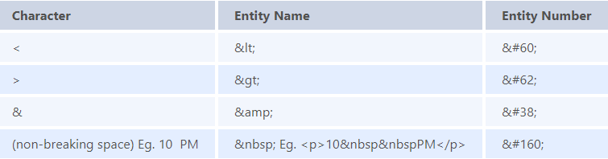
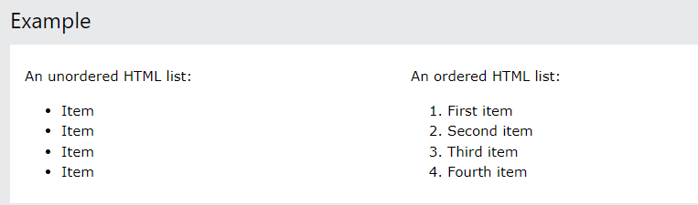
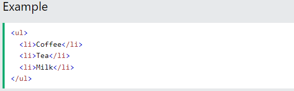
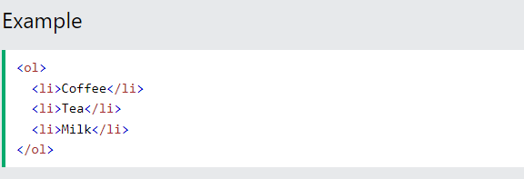
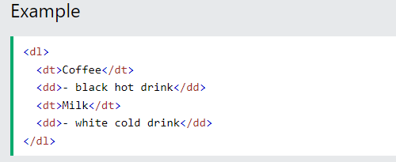
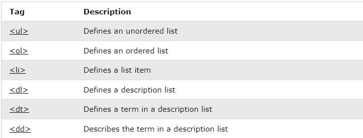

- No. HTML elements are defined by a starting tag, may contain some content and a closing tag.For example, <h1>Heading 1<h1> is a HTML element but just <h1> is a starting tag and <h1> is a closing tag.
- Tags are the primary component of the HTML that defines how the content will be structured/ formatted, whereas Attributes are used along with the HTML tags to define the characteristics of the element. For example, <p align=” center”>Interview questions</p>, in this the ‘align’ is the attribute using which we will align the paragraph to show in the center of the view.
- HTML elements which do not have closing tags or do not need to be closed are Void elements. For Example <br />, <img />, <hr />, etc.
- In HTML some characters are reserved like ‘<’, ‘>’, ‘/’, etc. To use these characters in our webpage we need to use the character entities called HTML Entities. Below are a few mapping between the reserved character and its respective entity character to be used.

HTML lists allow web developers to group a set of related items in lists.
Unordered HTML List
An unordered list starts with the <ul> tag. Each list item starts with the <li> tag. The list items will be marked with bullets (small black circles) by default:
Ordered HTML List
An ordered list starts with the <ol> tag. Each list item starts with the <li> tag. The list items will be marked with numbers by default:
HTML Description Lists
HTML also supports description lists. A description list is a list of terms, with a description of each term. The <dl> tag defines the description list, the <dt> tag defines the term (name), and the <dd> tag describes each term:
HTML List Tags
- Multiple elements in HTML can have the same class value, whereas a value of id attribute of one element cannot be associated with another HTML element.
- HTML has various formatting tags:
<b> - makes text bold
<i> - makes text italic
<em> - makes text italic but with added semantics importance
<big> - increases the font size of the text by one unit
<small> - decreases the font size of the text by one unit
<sub> - makes the text a subscript
<sup> - makes the text a superscript
<del> - displays as strike out text
<strong> - marks the text as important
<mark> - highlights the text
<ins> - displays as added text
- Cell Spacing is the space or gap between two consecutive cells. Whereas, Cell Padding is the space or gap between the text/ content of the cell and the edge/ border of the cell. Please refer to the above figure example to find the difference.
- HTML provides two table attributes “rowspan” and “colspan” to make a cell span to multiple rows and columns respectively.
-
- There are two display values: block and inline.
- A block-level element always starts on a new line and takes up the full width available.
- An inline element does not start on a new line and it only takes up as much width as necessary.
- To make a hyperlink in an HTML page, use the <a> and </a> tags, which are the tags used to define the links. The <a> tag indicates where the hyperlink starts and the </a> tag indicates where it ends. Whatever text gets added inside these tags, will work as a hyperlink. Add the URL for the link in the <a href=” ”>.
- The HTML <iframe> tag specifies an inline frame. An inline frame is used to embed another document within the current HTML document.
- The <span> tag is an inline container used to mark up a part of a text, or a part of a document. The <span> tag is easily styled by CSS or manipulated with JavaScript using the class or id attribute. The <span> tag is much like the <div> element, but <div> is a block-level element and <span> is an inline element.
- The most common & simple way to add background image is using the background image attribute inside the <body> tag. The background attribute which we specified in the <body> tag is not supported in HTML5. Using CSS properties, we can also add background image in a webpage.
- In order to put a simple image on a web page, we use the
element.
- Normal links are links which are there on the page and have not been clicked yet. Active links are those links, which have just been clicked at that instant.
- Active Links shows that the browser is in the process to load a new resource. You can do your own custom styling using CSS :active selector. In the above output, notice the active link on right-click of the link.
- A link becomes active when you click on it. Tip: The :active selector can be used on all elements, not only links. Tip: Use the :link selector to style links to unvisited pages, the :visited selector to style links to visited pages, and the :hover selector to style links when you mouse over them.
- <br> tag – Usually <br> tag is used to separate the line of text. It breaks the current line and conveys the flow to the next line.
- <p> tag – This contains the text in the form of a new paragraph.
- <blockquote> tag – It is used to define a large quoted section.
There are three tags that can be used to separate the texts:
- SVG stands for Scalable Vector Graphics
- SVG is used to define graphics for the Web
- SVG is a W3C recommendation
- To support old browsers instead of defining the resource of svg in src attribute of <img> tag, it should be defined in srcset attribute and in src the fallback png file should be defined.
<img src="circle.png" alt="circle" srcset="circle.svg">
| HTML | XHTML |
|---|---|
| Tags are not extensible. | Tags are extensible |
| Tags are not case-sensitive | Only lowercase tags are allowed |
| Possible to leave off and ending tag like </body> | tags should appear in pairs |
| overlapping tags | no overlapping tags |
-
Logical Tag-Logical tags are used to tell the browser what kind of text is written inside the tags. They are different from physical tags because physical tags are used to decide the appearance of the text and do not provide any information about the text.
Physical Tag- Physical Tags are used to indicate that how specific characters are to be formatted or indicated using HTML tags. Any physical style tag may contain any item allowed in text, including conventional text, images, line breaks, etc.